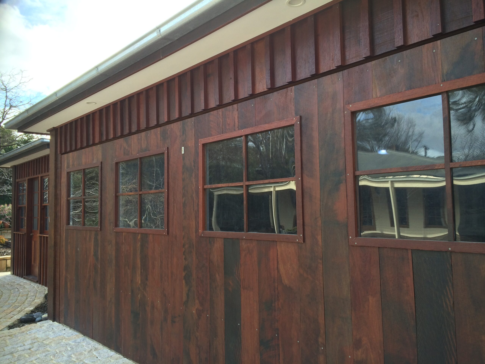
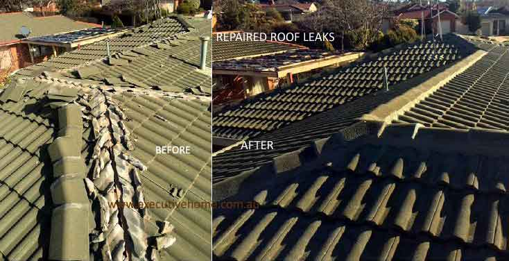
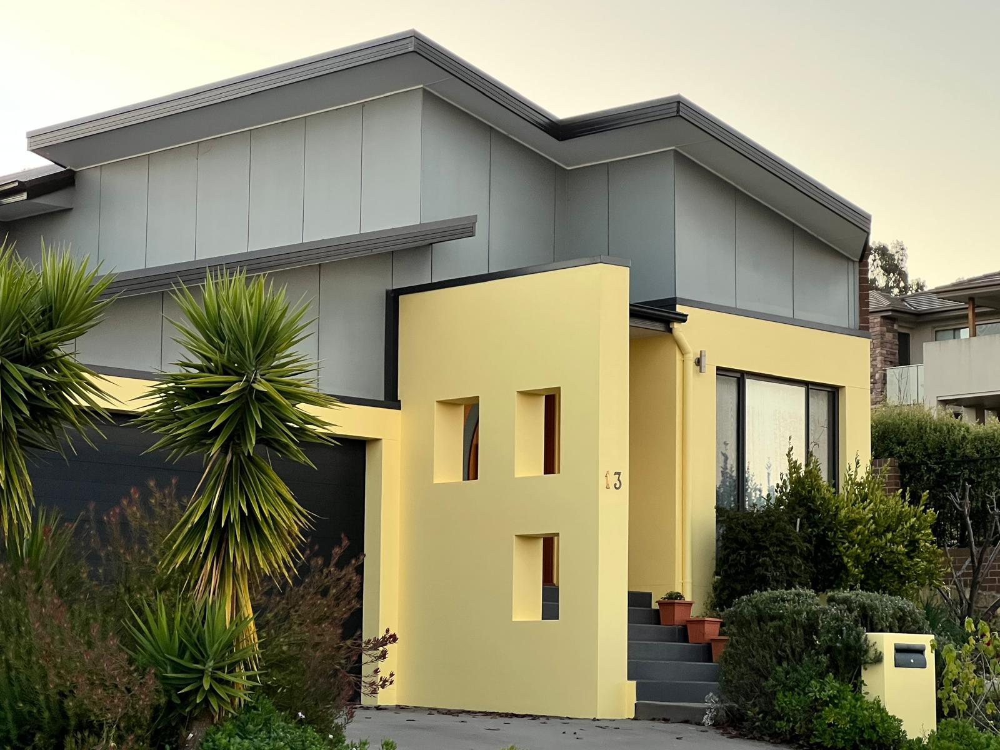
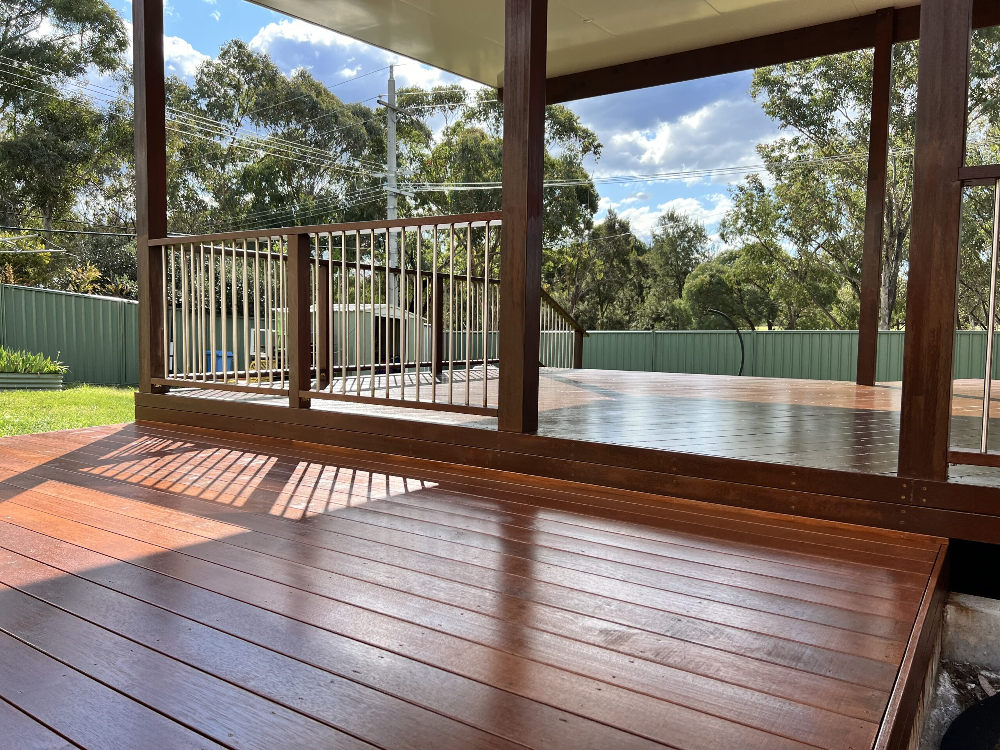

Repairs & Maintenance
General repairs, pre-sale fixes, property upkeep and multi-trade maintenance across homes and investment properties.
- Home repairs
- Property maintenance
- Pre-sale work
One call for trusted Canberra trades
Since 2003, Wally's Executive Home Management has helped homeowners and property owners repair, restore, renovate, and maintain their spaces with licensed ACT & NSW trades.

Repair. Restore. Maintain.
Whether you need a roof leak fixed, a deck restored, rooms repainted, plaster repaired, or a bathroom refreshed, the work starts with one experienced local contact and a clear next step.
General repairs, pre-sale fixes, property upkeep and multi-trade maintenance across homes and investment properties.
Roof leaks, broken tiles, ridge capping, repointing, pressure cleaning, painting and restoration work.
Interior and exterior painting, surface preparation, restoration finishes and commercial repainting.
Deck repairs, timber screens, doors, built-ins, rot repairs, structural fixes and detailed carpentry work.
Why Wally
Many property issues involve more than one trade. Water damage can need roofing, plastering, carpentry, painting and tiling. Wally's value is coordinating the right people and keeping the job practical.
About the teamAward-winning finish work



Client proof
"The advantages of using Wally to provide the solution and repair soon became evident."
Alycia Nevalainen
"Wally comes up with good solutions to difficult problems, at a reasonable price."
Peter Hughes
"We will be using Wally's Executive Home Management for any future home improvement jobs."
Denis Shephard
Process
Tell Wally what needs fixing, improving or checking at the property.
The issue is inspected so the right trade path can be recommended.
You get practical advice and a quote based on the work required.
Wally manages the moving parts and keeps the project outcome in focus.
Ready to talk?